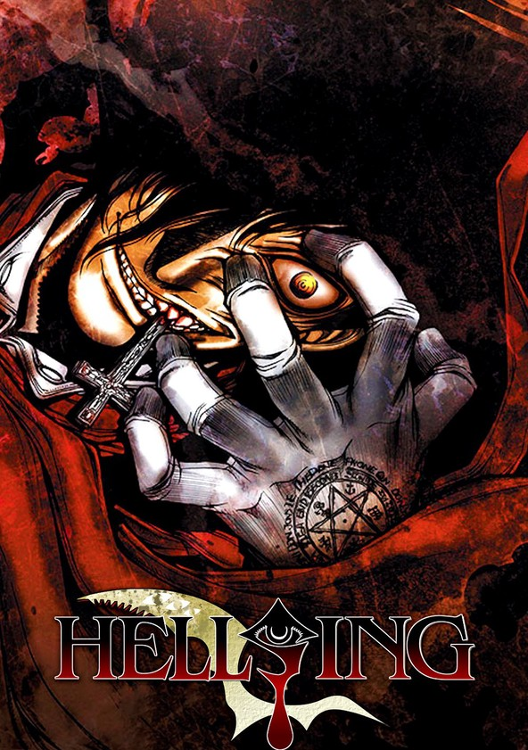
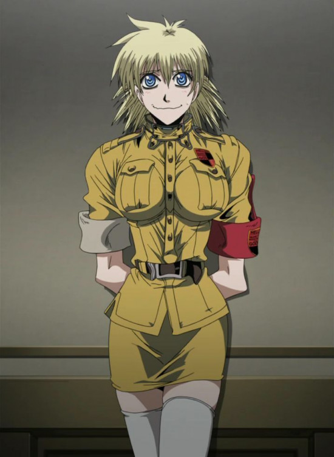
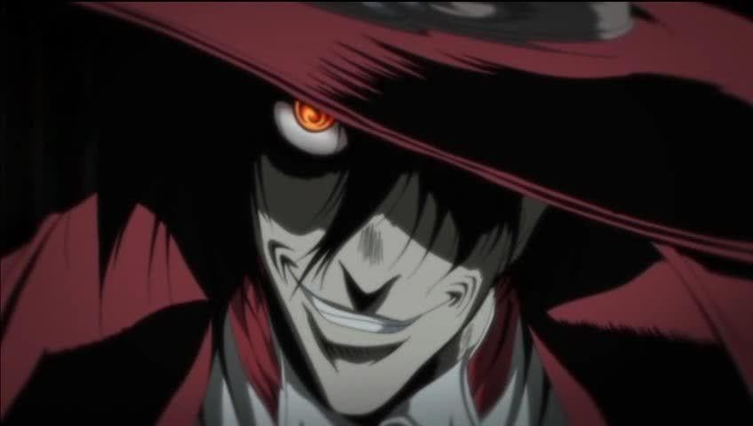
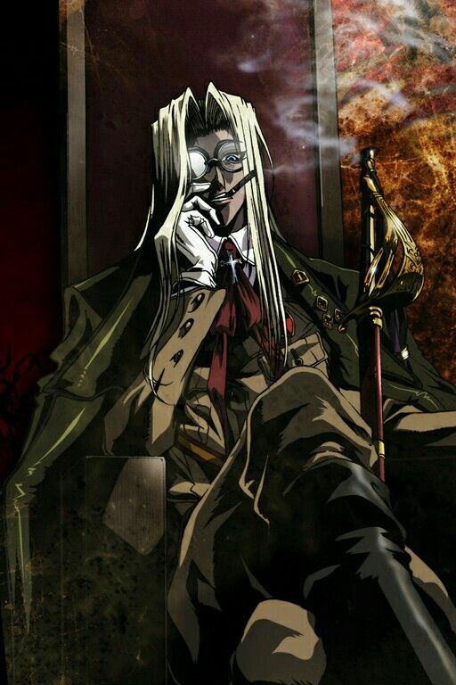
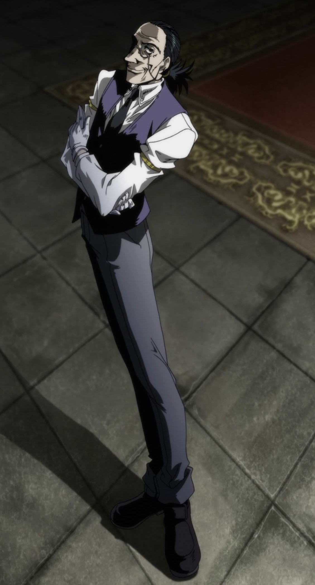

ULTIMATE
Fecha de estreno: 10 de febrero de 2006
Creador: Kota Hirano
Estudio de animación: Gonzo, Satelight, Madhouse, Graphinica y Kelmadick
Editorial: Shonen Gahosha
Capítulos: 10 ovas
Cadena televisiva: Fuji Television
Géneros: seinen, culto, vampiros, gore, acción, sobrenatural, suspense, fantasía
Directores: Umanosuke Iida y Yasunori Urata
Licenciado en: España, Brasil y EE.UU
Capítulo piloto: The legend of the vampire hunter
Úlima emisión: 26 de diciembre de 2012
Anime original: Hellsing
Sinopsis
Seras Victoria es una mujer veinteañera virgen que trabaja en el cuerpo policial de Inglaterra, donde nació y se crió.
Sin darse cuenta, es envuelta en un caso nunca antes visto de un asesino serial el cual coincide con un vampiro cura. Sin
creerse todo esto, intenta correr aunque al final acaba como rehén frente a otro vampiro que se presenta como Alucard, quien
trabaja para la compañía secreta de Inglaterra encargada de la caza de vampiros, Hellsing.
Tras Seras ser salvada por Alucard transformádola en vampira deberá
adentrarse en este mundo conociendo las cualidades de la criatura en la que se ha transformado bajo su maestro, Alucard, y su líder,
Sir Integra Wingates Hellsing.
Personajes principales
-Seras Victoria: es una mujer veintieañera y una muy joven draculina que, hasta el momento, no se sabe que haya probado aún la sangre humana. Es divertida, a veces patosa, algo bromista y bastante sentimental con sus seres queridos como su maestro, Alucard o su jefa, Integra como el mayordomo de esta, Walter.
Spoiler
Vivió su infancia en un orfanato donde la tachaban por tener una terrible actitud frente a los cuidadores y en especial a otros niños. Su sueño desde pequeña era ser policía como su padres, quien murió por culpa de un criminal al que estuvo persiguiendo, también mataron a su madre en el mismo accidente y violaron su cadáver frente a ella mientras se desangraba. Entró al final al cuerpo policial por fin y acabó, como sabemos en el primer capítulo en la organización Hellsing.
-Alucard: un longevo vampiro y el llamado arma secreta de la asociación caza-vampiros Hellsing. Trabaja bajo órdenes de Integra, sus propósitos es simplemente cumplir los deseos de ella incluso si es matar a cualquier ser vivo. Es algo serio, estricto y sobre todo directo, pero en el fondo se preocupa e interesa por las personas de su alrededor como Seras.
Spoiler
El es el Conde Drácula, quien en su infancia vivió maltrado hasta que se convirtió en el poderoso vampiro de las antiguas leyendas en la cultura
romántica y gótica. Tiene el temible poder de usar las vidas arrebatas por él para que nunca muera y reviva dependiendo del número de muertes que ha asesinado. Absorbió hasta su propia armada y gente hasta que un antepasado de Integra, Sr. Hellsing, le derrotó y lo convirtió en su perro guardián.
-Integra Wingates Hellsing: la última líder de la organización de su familia,
Integra es una mujer seria y calculadora, fría con sus enemigos y amable con sus aliados, empática en el fondo con sus camaradas y hombres pertenecientes
a Hellsing. Tuvo ciertos problemas por culpa de su tío el cual quiso matarla cuando era joven para ser el líder de Hellsing, al final acabó encontrando el sótano
donde se encontraba Alucard, lo despertó y le salvó.

Spoiler
Actualmente, es una señora jubialada de la que tiene sus ideales en pie sobre aceptar ser la última Hellsing que habrá en el mundo, pues no tiene pensado aceptar la mano de ningún varon. Tampoco tiene pensado
en convertirse en vampiro, pues prefiere morir siendo humana antes que vivir durante miles de años más como monstruo apartado de Dios.
-Walter C. Dornez: es el mayordomo de Integra y compañero de Alucard cuando era joven.
Conocido como el apodo de shinigami en sus tiempos jóvenes, ahora tiene la edad de unos 69 años sirviendo a Integra y a la compañía
Hellsing. Su historia pasada se remonta en un manga precuela hecho por el creador de "hellsing" llamado "the dawn".

Opinión de la obra
Hellsing fue una obra muy antigua, cuando el género de vampiros no estaba saturado ni estereotipado
con cualquier película de crítica mediocre como "crepúsculo" haciendo a hellsing muy inflavalorada por ello en lo que creo personalmente.
Historia
En términos argumentales, hellsing se le puede notar que ha sido una obra con una trama muy pensada y cuidada hasta el más mínimo detalle argumental,
una historia de vampiros muy oscura y llena de referencias religiosas e históricas, con un gran contraste por su comedia. Considerada y merecida una de las
mejores historias de vampiros. Aunque el transcurso del desarrollo de la trama puede que flojee hsta el final, pero igualmente sigue siendo una buena obra que merece
mucho la pena.
Personajes
Los personajes son muy carismáticos, sobre todo Alucard. Una persona muy balanceada en cuanto a ideales y sobre todo entretenido de ver cada vez que entra
en un combate que sabe que ganará. Seras e Integra no se quedan atrás, la evolución de ambos se hace muy cómodo y no parece en absoluto forzado.
Animación y dibujo
El dibujo de Hellsing Ultimate es sencillamente espectacular, teniendo en cuenta que lo animaron varios estudios actualmente muy reconocidos por el mundo del anime y el manga.
La animación es un obra de arte con todas las letras, el contraste entre las sombras y la iluminación en algunos elementos es sublime y las tramas resaltan en cualquier rostro o acción
animada en la obra. Por último, el movimiento de la animación es muy fluido, se nota la velocidad cuando el personaje va rápido o cuando va normal.
Final
Tal vez, una de las cosas que menos gusta de esta obra es su extraño final, uno del cuál se basa de una teoría referenciada históricamente, la cuál sino se entendió puede parecer extraño
dicho final y seguramente es lo que menos le gustó al público.
Recomendación
Si eres un amante del diseño y animación, a la par que un fan de historias crudas con referencias cultas y sobre todo una trama oscura, esta serie es muy posiblemente que te guste, si eres
alguien que no cumple estas características es posible que no te agrade mucho, tanto en historia y argumento como animación y contorno.
Contact Me
Cartagena, España
Tf: +34 612345
Email: belshu13@gmail.com
Opinión de la obra
Hellsing fue una obra muy antigua, cuando el género de vampiros no estaba saturado ni estereotipado con cualquier película de crítica mediocre como "crepúsculo" haciendo a hellsing muy inflavalorada por ello en lo que creo personalmente.
Historia
En términos argumentales, hellsing se le puede notar que ha sido una obra con una trama muy pensada y cuidada hasta el más mínimo detalle argumental, una historia de vampiros muy oscura y llena de referencias religiosas e históricas, con un gran contraste por su comedia. Considerada y merecida una de las mejores historias de vampiros. Aunque el transcurso del desarrollo de la trama puede que flojee hsta el final, pero igualmente sigue siendo una buena obra que merece mucho la pena.
Personajes
Los personajes son muy carismáticos, sobre todo Alucard. Una persona muy balanceada en cuanto a ideales y sobre todo entretenido de ver cada vez que entra en un combate que sabe que ganará. Seras e Integra no se quedan atrás, la evolución de ambos se hace muy cómodo y no parece en absoluto forzado.
Animación y dibujo
El dibujo de Hellsing Ultimate es sencillamente espectacular, teniendo en cuenta que lo animaron varios estudios actualmente muy reconocidos por el mundo del anime y el manga.
La animación es un obra de arte con todas las letras, el contraste entre las sombras y la iluminación en algunos elementos es sublime y las tramas resaltan en cualquier rostro o acción
animada en la obra. Por último, el movimiento de la animación es muy fluido, se nota la velocidad cuando el personaje va rápido o cuando va normal.
Final
Tal vez, una de las cosas que menos gusta de esta obra es su extraño final, uno del cuál se basa de una teoría referenciada históricamente, la cuál sino se entendió puede parecer extraño
dicho final y seguramente es lo que menos le gustó al público.
Recomendación
Si eres un amante del diseño y animación, a la par que un fan de historias crudas con referencias cultas y sobre todo una trama oscura, esta serie es muy posiblemente que te guste, si eres
alguien que no cumple estas características es posible que no te agrade mucho, tanto en historia y argumento como animación y contorno.
Contact Me
Cartagena, España
Tf: +34 612345
Email: belshu13@gmail.com
Contact Me
Cartagena, España
Tf: +34 612345
Email: belshu13@gmail.com